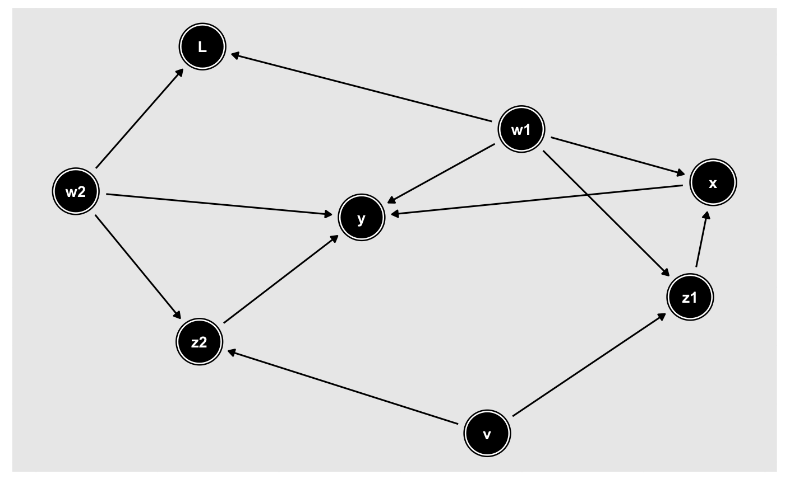
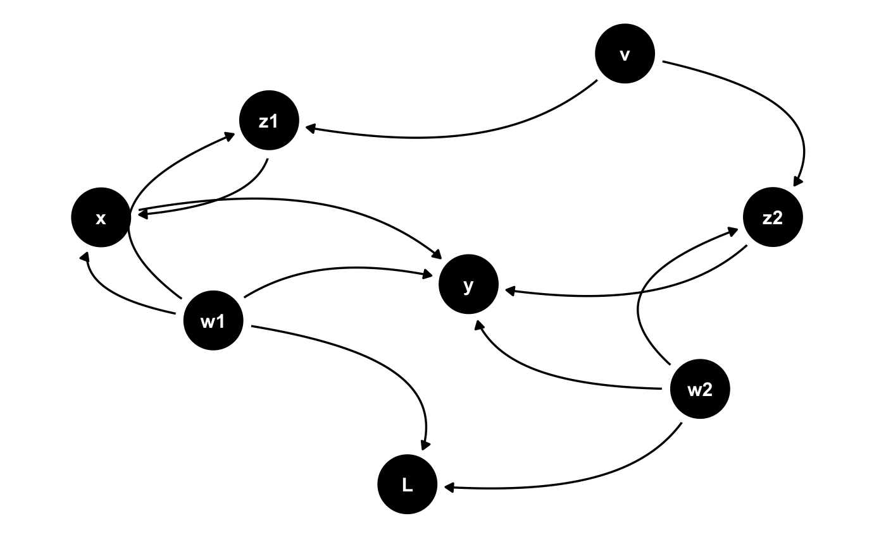
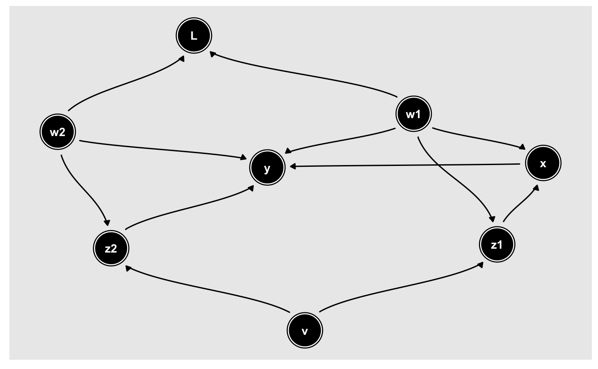

Directed DAG edges
geom_dag_edges_link(mapping = NULL, data = NULL, arrow = grid::arrow(length = grid::unit(5, "pt"), type = "closed"), position = "identity", na.rm = TRUE, show.legend = NA, inherit.aes = TRUE, ...) geom_dag_edges_arc(mapping = NULL, data = NULL, curvature = 0.5, arrow = grid::arrow(length = grid::unit(5, "pt"), type = "closed"), position = "identity", na.rm = TRUE, show.legend = NA, inherit.aes = TRUE, fold = FALSE, n = 100, lineend = "butt", linejoin = "round", linemitre = 1, label_colour = "black", label_alpha = 1, label_parse = FALSE, check_overlap = FALSE, angle_calc = "rot", force_flip = TRUE, label_dodge = NULL, label_push = NULL, ...) geom_dag_edges_diagonal(mapping = NULL, data = NULL, position = "identity", arrow = grid::arrow(length = grid::unit(5, "pt"), type = "closed"), na.rm = TRUE, show.legend = NA, inherit.aes = TRUE, n = 100, lineend = "butt", linejoin = "round", linemitre = 1, label_colour = "black", label_alpha = 1, label_parse = FALSE, check_overlap = FALSE, angle_calc = "rot", force_flip = TRUE, label_dodge = NULL, label_push = NULL, ...) geom_dag_edges_fan(mapping = NULL, data = NULL, position = "identity", arrow = grid::arrow(length = grid::unit(5, "pt"), type = "closed"), na.rm = TRUE, show.legend = NA, inherit.aes = TRUE, spread = 0.7, n = 100, lineend = "butt", linejoin = "round", linemitre = 1, label_colour = "black", label_alpha = 1, label_parse = FALSE, check_overlap = FALSE, angle_calc = "rot", force_flip = TRUE, label_dodge = NULL, label_push = NULL, ...)
| mapping | Set of aesthetic mappings created by aes() or aes_(). If specified and inherit.aes = TRUE (the default), it is combined with the default mapping at the top level of the plot. You must supply mapping if there is no plot mapping. |
|---|---|
| data | The data to be displayed in this layer. There are three options: If NULL, the default, the data is inherited from the plot data as specified in the call to ggplot(). A data.frame, or other object, will override the plot data. All objects will be fortified to produce a data frame. See fortify() for which variables will be created. A function will be called with a single argument, the plot data. The return value must be a data.frame., and will be used as the layer data. |
| arrow | specification for arrow heads, as created by arrow() |
| position | Position adjustment, either as a string, or the result of a call to a position adjustment function. |
| na.rm | If FALSE (the default), removes missing values with a warning. If TRUE silently removes missing values |
| show.legend | logical. Should this layer be included in the legends? NA, the default, includes if any aesthetics are mapped. FALSE never includes, and TRUE always includes. It can also be a named logical vector to finely select the aesthetics to display. |
| inherit.aes | If FALSE, overrides the default aesthetics, rather than combining with them. This is most useful for helper functions that define both data and aesthetics and shouldn't inherit behaviour from the default plot specification, e.g. borders(). |
| ... | Other arguments passed to ggraph::geom_edge_*() |
| curvature | The bend of the curve. 1 approximates a halfcircle while 0 will give a straight line. Negative number will change the direction of the curve. Only used if layout circular = FALSE. |
| fold | Logical. Should arcs appear on the same side of the nodes despite different directions. Default to FALSE. |
| n | The number of points to create along the path. |
| lineend | Line end style (round, butt, square) |
| linejoin | Line join style (round, mitre, bevel) |
| linemitre | Line mitre limit (number greater than 1) |
| label_colour | The colour of the edge label. If |
| label_alpha | The opacity of the edge label. If |
| label_parse | If |
| check_overlap | If |
| angle_calc | Either 'none', 'along', or 'across'. If 'none' the label will use the angle aesthetic of the geom. If 'along' The label will be written along the edge direction. If 'across' the label will be written across the edge direction. |
| force_flip | Logical. If |
| label_dodge | A |
| label_push | A |
| spread | Modify the width of the fans |
geom_dag_edges_link, geom_dag_edges_arc, geom_dag_edges_diagonal, and
geom_dag_edges_fan understand the following aesthetics. Bold aesthetics are
required.
x
y
xend
yend
edge_colour
edge_width
edge_linetype
edge_alpha
start_cap
end_cap
label
label_pos
label_size
angle
hjust
vjust
family
fontface
lineheight
geom_dag_edges_arc and geom_dag_edges_diagonal also require
circular, but this is automatically set.
geom_dag_edges_fan requires to and from, but these are also
automatically set.
p <- dagify(y ~ x + z2 + w2 + w1, x ~ z1 + w1, z1 ~ w1 + v, z2 ~ w2 + v, L ~ w1 + w2) %>% ggplot(aes(x = x, y = y, xend = xend, yend = yend)) + geom_dag_node() + geom_dag_text() + theme_dag() + scale_dag() p + geom_dag_edges_link()p + geom_dag_edges_arc()p + geom_dag_edges_diagonal()